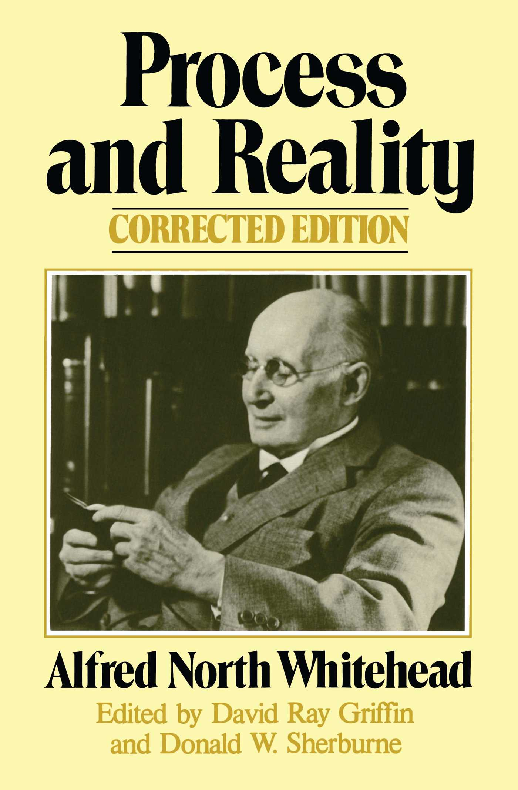

36:17 · 8 OPERE
Symbolism and its philosophical and theological implications.
Il filo del discorso
La conferenza, in inglese e con interventi del pubblico, esplora il simbolo come modo di mettere in relazione parti, significati e tradizioni. Il relatore parte dal segno di riconoscimento greco e dal mito delle metà nel Simposio, accostandoli alla creazione della donna nella Genesi. Cerchio, triangolo, stella di David, yin e yang e croce diventano poi esempi di una ricerca dell’unità attraverso differenze e opposizioni. Una lunga digressione passa dagli Elementi di Euclide ai paradossi di Zenone e alle serie numeriche: le note precisano i punti in cui l’esempio didattico confonde definizioni, dimensione e convergenza. L’intervento collega anche il linguaggio dei numeri, la gematria, il simbolo cristiano del pesce e il motto scelto da Niels Bohr. Il tema della meraviglia riconduce a Platone, mentre una domanda sulla svastica permette di discutere il mutamento storico dei significati. Nel finale, il relatore affronta unità divina, male, dubbio e realtà sensibile, fino alla caverna platonica. Il contributo propone un confronto filosofico fra tradizioni; la scheda distingue queste analogie da una dimostrazione di origine comune, da etimologie accertate o da risultati scientifici. Disegni e gesti alla lavagna sono descritti tramite il parlato disponibile, senza dichiararne un esame visivo diretto.
I libri nel discorso

Simposio
Identificazione probabile
Copertina: Adelphi · Piccola Biblioteca 81 · 1979
Copertina autentica dell’edizione di riferimento, controllata visivamente. Non identifica l’esemplare letto o citato nel video.
Platone e mito degli esseri divisi in due espliciti; il titolo Simposio non è pronunciato. Identificazione probabile del discorso di Aristofane, 189d–193d.
Passaggio 0:58 ↗ · Fonti e libro ↗
Genesi
Copertina: Einaudi, I libri della Bibbia / Einaudi Tascabili, 2000; introduzione di Steven Rose
Copertina dell’edizione autonoma Genesi, nella serie I libri della Bibbia, con introduzione di Steven Rose. Edizione scelta come riferimento iconografico; nessuna edizione è confermata nel video.
Genesi nominata esplicitamente per Adamo ed Eva; creazione dell’essere umano e formazione della donna in Genesi 2.
Passaggio 2:26 ↗ · Fonti e libro ↗
Gli elementi
Copertina: Bompiani · Tutte le opere, raccolta contenente Gli elementi
La copertina illustra la raccolta Tutte le opere, che include Gli elementi; non è attribuita al video.
Euclide, Stoicheia ed Elements nominati esplicitamente nella discussione di punto, linea e dimensione.
Passaggio 9:06 ↗ · Fonti e libro ↗
Teeteto, o sulla scienza
Identificazione probabile
Copertina: Feltrinelli · 1994 · traduzione di Luca Antonelli, introduzione di Salvatore Natoli, saggio di Davide Spanio
Immagine autentica dell’opera, controllata visivamente; l’edizione di riferimento non è attribuita al filmato.
Platone e nascita della filosofia dalla meraviglia con Iris figlia di Taumante: identificazione probabile di Teeteto 155d, titolo non pronunciato.
Passaggio 21:54 ↗ · Fonti e libro ↗
Vangelo secondo Luca
Identificazione probabile
Copertina del volume completo: San Paolo, 2014 · Nuova Versione dai Testi Antichi · edizione di riferimento
Vangelo secondo Luca è un libro della Bibbia. L’immagine mostra il volume completo San Paolo di riferimento, non un’edizione autonoma del singolo libro e non una versione identificata nella citazione.
Detto sul regno di Dio dentro o in mezzo a voi: identificazione probabile di Luca 17,21, evangelista e titolo non pronunciati.
Passaggio 26:59 ↗ · Fonti e libro ↗
Gorgia
Identificazione probabile
Copertina: Gorgia, Bompiani, giugno 2001, a cura di Giovanni Reale, testo greco a fronte, 384 pagine, ISBN 9788845291111. Copertina ufficiale blu, bianca e verde acqua con titolo e autore; edizione di riferimento non identificata nel video.
Immagine autentica dell’opera, controllata visivamente; l’edizione di riferimento non è attribuita al filmato.
Platone citante Euripide sulla possibilità che vita e morte siano invertite: probabile Gorgia 492e, titolo non pronunciato.
Passaggio 32:31 ↗ · Fonti e libro ↗
La Repubblica
Identificazione probabile
Copertina: Laterza · La Repubblica · edizione con testo a fronte di riferimento
Immagine associata all’ISBN di riferimento e controllata visivamente; edizione e traduzione non identificate come quelle citate o lette nel video.
Platone e caverna espliciti; titolo dell’opera non pronunciato, identificazione probabile del libro VII della Repubblica.
Passaggio 35:29 ↗ · Fonti e libro ↗
Process and Reality
Identificazione probabile
Copertina: Process and Reality, corrected edition a cura di David Ray Griffin e Donald W. Sherburne, Free Press, edizione paperback del 1 luglio 1979, 448 pagine, ISBN 9780029345702. Opera originale del 1929; la corrected edition fu predisposta nel 1978. Copertina gialla con ritratto e nomi dei curatori.
Immagine autentica dell’opera, controllata visivamente; l’edizione di riferimento non è attribuita al filmato.
La formula della filosofia come note a Platone è riconducibile a Whitehead, Process and Reality, parte II, capitolo I, p. 39 dell’edizione corretta. Autore e titolo non pronunciati: identificazione probabile.
Passaggio 35:44 ↗ · Fonti e libro ↗